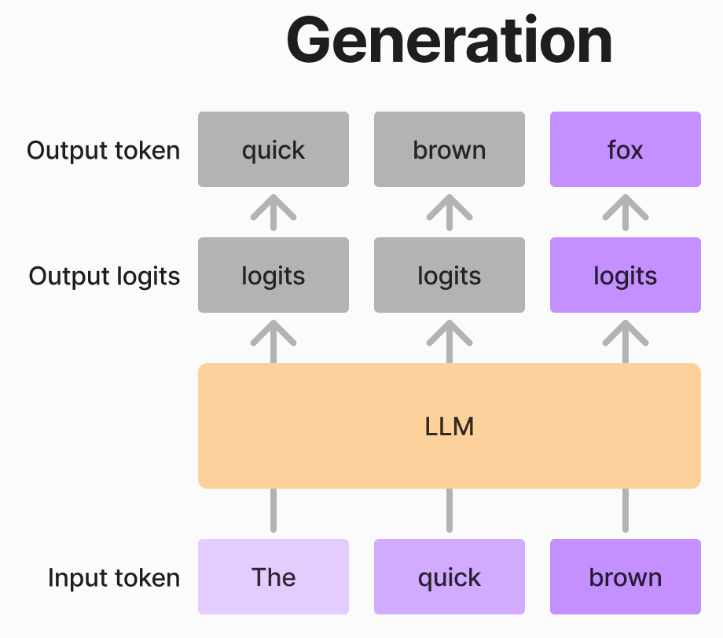

import torch
from transformers import AutoModelForCausalLM, AutoTokenizer
import time
# Model Loading and Setup
small_model_name = 'Qwen/Qwen2.5-0.5B-Instruct-GPTQ-Int4'
big_model_name = 'Qwen/Qwen2.5-3B-Instruct-GPTQ-Int4'
# the tokenizer is the same for both models
tokenizer = AutoTokenizer.from_pretrained(small_model_name)
small_model = AutoModelForCausalLM.from_pretrained(
small_model_name, torch_dtype='auto', device_map='auto'
).eval()
big_model = AutoModelForCausalLM.from_pretrained(
big_model_name, torch_dtype='auto', device_map='auto'
).eval()LLMの推論速度を劇的に加速する方法 Speculative Decoding の解説
NLP
LLM
はじめに
皆さんに質問です。 「モデルの精度を落とさず、計算リソースも増やさず、推論速度だけを2倍にする方法」 があるとしたら——それは魔法でしょうか？それとも現実の技術でしょうか？
答えは後者です。Google DeepMindとUC Berkeleyが共同開発したSpeculative Decodingは、まさにこの不可能を可能にする「推論加速のブラックボックス」。自動車で例えれば、ナビの予測ルート候補を事前計算しつつ、実際の走行で最適経路を選択するような巧妙な手法で、LLMの生成速度に革命を起こします。
「Speculative Decoding」って何？
「Speculative Decoding」は日本語で「推測的デコーディング」と訳されることが多く、直訳に近い表現として「投機的デコーディング」と呼ばれることもあります。この手法を簡単に言うと、小さなモデル（ドラフトモデル）で複数トークンをまとめて推測・生成し、それを大きなモデル（ターゲットモデル）で一括検証するというものです。推測が正しければ、その結果をそのまま利用することで、テキスト生成を高速化できます。
もう少し詳しく見ていきましょう。
例えば、LLaMa3 70Bを使ってテキストを生成したいとします。LLaMa3 70Bは非常に大きいモデルのため、テキスト生成に時間がかかります。そこで、より小さなモデル、例えばLLaMa3 7Bをドラフトモデルとして利用してSpeculative Decodingを行います。
入力として「The quick brown」というテキストを与えてみましょう。これは英語で有名な文「The quick brown fox jumps over the lazy dog」の冒頭部分であり、小さなモデルでも比較的容易に続きを推測できると考えられます。
まず、小さなモデルに「The quick brown」を入力し、続くトークンを推測させます。ここでは、一度に推測するトークン数（チャンクサイズ）を2と設定しましょう。
すると、小さなモデルは「The quick brown fox jumps」と生成しました。
次に、この結果を大きなモデルで検証します。小さなモデルが推測したトークンをプロンプトに含めて大きなモデルに入力すると、「fox jumps over」と生成しました。小さなモデルが生成した「fox jumps」を検証できたのみではなく、その先の「over」まで予測できています。
ここで、処理時間について考えてみましょう。7Bモデルが1トークンを生成するのにかかる時間を \(t\) 、70Bモデルが1トークンを生成するのにかかる時間を \(T\) とします。
小さなモデルは2つのトークンを生成するのに \(2t\) の時間がかかります。一方、大きなモデルは検証のために1回だけ推論を行うので、かかる時間は \(T\) です。したがって、合計時間は \(2t + T\) となります。もしSpeculative Decodingを使わずに70Bモデルだけで3トークンを生成しようとすると、\(3T\) の時間がかかります。一般的に、\(t\) は \(T\) よりもずっと小さいため、Speculative Decodingを利用することで生成時間を大幅に短縮できることがわかります。
上記でSpeculative Decodingの概要を説明しましたが、まだ疑問点が残るかもしれません。
- なぜ70Bモデルで複数のトークンを検証するのに、検証時間が\(1T\)だけで済むのか？
- なぜ2つのトークンを検証する際に、次のトークンも得られるのか？
- 小さいモデルの推測が間違っていた場合はどうなるのか？
- なぜ毎回2トークン推測するのか？もっと多くのトークンを一度に推測すれば、さらに高速化できるのではないか？
これらの疑問について、次の章で詳しく解説していきます。
LLMの生成プロセスの説明
これからコードで「Speculative Decoding」を再現するにあたり、その前に、LLMがどのようにトークンを生成しているかを前置きとして説明します。
LLMはトークンを生成する際、一つずつ順番に生成します。一つのトークンを生成するプロセスは以下の通りです。

- 「The quick brown」 の3つのトークンをモデルに入力します。
- モデルは入力トークンに対応するlogitsを出力します。この例では3つのトークンを入力したため、3つのlogitsが出力されます。
- 最後のトークンに対応するlogitsのみ を用いて、Softmax関数を適用し、次のトークンの確率分布を得ます。
- その確率分布から、次のトークンをサンプリングします。ここでは「fox」がサンプリングされました。
- 次のステップでは、元の入力にトークン「fox」を加えた 「The quick brown fox」 を新たな入力とします。
このプロセスを、必要なトークン数になるまで繰り返すことで、文章を生成することができます。
ここで重要なポイントは、LLMが出力するlogitsの数が入力トークン数と同じであるという点です。加えて、各入力トークンに対応するlogitsは、そのトークンの次のトークンの確率分布を予測するために利用されます。 この特性を利用することで、小さいモデルが提案したトークン列の妥当性を、大きいモデルを使って効率的に検証することができます。

例えば、上の図のように「The quick brown」の3つのトークンを入力として、小さいモデルが「fox jumps」という2つのトークンを提案したとします。この場合、大きいモデルは「The quick brown」を入力とし、3つのlogitsを出力します。これらのlogitsを用いることで、「fox」が「The quick brown」の、そして「jumps」が「The quick brown fox」の次のトークンとして適切かどうかを、一度のフォワードパスで検証できます。さらに、「fox jumps」が正しいと判断された場合、大きいモデルは「jumps」の次のトークンのlogitsも出力していることから、次のトークンの予測も同時に得られます。
一方、提案が正しくなかった場合、大きいモデルは最初に間違ったトークンを特定し、正しいトークンに修正できます。次のステップでは、修正されたトークンまでを入力として使用します。

例えば、上の図のように小さいモデルの提案が「fox run」で、大きいモデルの出力が「fox jumps over」である場合、「fox」までは正しいが「run」が間違っていると判断できます。この場合、「fox」の次のトークンとして「jumps」を採択します。次のステップでは 「The quick brown fox jumps」 を入力として、再び生成プロセスを続行します。
仕組みを理解したうえで上の4つの質問を回答することができます。
- なぜ70Bのモデルで検証する際にかかる時間が\(1T\)のみか？
- 回答：一度のフォワードパスで、入力されたすべてのトークンを並列で検証できるためです。
- なぜ新しく生成した2個のトークンを検証するのに、更にその次のトークンも得られるか？
- 回答：第\(t\)トークンのlogitsを用いて第\(t+1\)トークンの確率分布を予測するためです。提案が正しい場合、次のトークンも同時に得られます。
- 小さいモデルの提案が正しくない場合はどうするのか？
- 回答：提案が誤っている場合は、大きいモデルが最初に誤ったトークンを特定し、正しいトークンに修正します。次のステップでは、修正されたトークンまでを入力として使用します
- なぜ毎回2個のみ推測するのか？もっと多くのトークンを一度に推測すればもっと速くなるのでは？
- 回答：一度に推測するトークン数を増やすと、提案が誤る可能性も高くなるためです。例えば、一度に100トークン提案し、2個目が誤っていた場合、98個のトークンが無駄になってしまいます。Transformersの実装案では、最初に3個とし、誤りの場合は1個減少し、正解の場合は2個増加させるという方法を採用しています。
コードでの再現
これからは上記のことをコードで再現します。今所持しているPCのGPUはRTX4070で、メモリは12GBのみなので、今回はLLaMa3ではなく、4Bitで量子化したQwen2.5の0.5Bと3Bを利用します。
まずモデルをローディングし、インプットデータを準備します。
prompt = 'The quick brown'
input_ids = tokenizer.encode(prompt, return_tensors='pt').to(small_model.device)
print('Input IDs:', input_ids[0].tolist())
print('Input tokens:', tokenizer.decode(input_ids[0], skip_special_tokens=True))Input IDs: [785, 3974, 13876]
Input tokens: The quick brownつぎに、小さいモデルで2個のトークンを生成します。結果として、予想通りに「fox jumps」が新しく生成されました。
candidate_length = 2
candidate_ids = small_model.generate(input_ids, max_new_tokens=candidate_length)
candidate_new_ids = candidate_ids[:, input_ids.shape[1] :] # remove the prompt
def formatted_print(var_name, var):
length_str = len(var_name)
print(f'{var_name}:{str(var):>{60 - length_str}}')
formatted_print('Candidate IDs', candidate_ids[0].tolist())
formatted_print('Candidate new IDs', candidate_new_ids[0].tolist())
formatted_print('Candidate tokens', tokenizer.decode(candidate_ids[0]))
formatted_print('Candidate new tokens', tokenizer.decode(candidate_new_ids[0]))Candidate IDs: [785, 3974, 13876, 38835, 34208]
Candidate new IDs: [38835, 34208]
Candidate tokens: The quick brown fox jumps
Candidate new tokens: fox jumps次に、生成されたトークンを大きなモデルで検証します。
big_model_logits = big_model(candidate_ids).logits
big_model_ids = big_model_logits.argmax(dim=-1) # validation result
formatted_print('verified_ids', big_model_ids.tolist())
formatted_print('verified_tokens', tokenizer.decode(big_model_ids[0]))verified_ids: [[2701, 13876, 38835, 34208, 916]]
verified_tokens: following brown fox jumps over得た「following brown fox jumps over」の由来は以下の図でわかります。
もしインプットが「The」の場合は、7Bのモデルによると次のトークンが「following」である確率が最も高いです。
もしインプットが「The quick」の場合は、7Bのモデルによると次のトークンが「brown」である確率が最も高いです。
…

最初から一個の予測が間違っていますが、でもこれは大丈夫です。なぜかというと、検証の対象は新しく生成された「fox jumps」だけのためです。
次のセルに「fox jumps over」がでましたが、「over」はボーナストークンです。
verified_ids = big_model_ids[:, -(candidate_length + 1) :]
formatted_print('verified_ids', verified_ids[0].tolist())
formatted_print('varified_tokens', tokenizer.decode(verified_ids[0]))verified_ids: [38835, 34208, 916]
varified_tokens: fox jumps over0.5Bモデルが提案した結果を7Bモデルの検証結果と比較し、全部合っていることがわかりました。次に「fox jump」プラス最後のボーナストークン「over」をインプットに結合して次の生成に回すことができます。
# validation result
n_matches = (
(~(candidate_new_ids == verified_ids[:, :-1])).cumsum(dim=-1) < 1
).sum() # fancy way to count the number of matches
valid_ids = verified_ids[:, : n_matches + 1]
next_input_ids = torch.cat((input_ids, valid_ids), dim=-1)
formatted_print('n_matches', n_matches.item())
formatted_print('valid_ids', valid_ids[0].tolist())
formatted_print('valid_tokens', tokenizer.decode(valid_ids[0]))
formatted_print('next_input_ids', next_input_ids[0].tolist())
formatted_print('next_input_tokens', tokenizer.decode(next_input_ids[0]))n_matches: 2
valid_ids: [38835, 34208, 916]
valid_tokens: fox jumps over
next_input_ids: [785, 3974, 13876, 38835, 34208, 916]
next_input_tokens: The quick brown fox jumps overこれで、Speculative Decodingの一個の循環が完了しました。
実験
コードの分解もしたので、次に実際に実験してみましょう。今回はコード生成の結果を比較してみます。まず、上記のコードを関数として整理します。
import torch
def speculative_decoding(
big_model,
small_model,
input_ids,
max_length=1000,
candidate_length=3,
tokenizer=None,
):
generated_ids = input_ids.clone()
total_generated = 0
accepted = 0
generated_ids_list = [('prompt', tokenizer.decode(input_ids[0]))]
with torch.no_grad():
while generated_ids.shape[-1] < max_length:
# 1. Candidate Generation (Small Model)
candidate_input_ids = small_model.generate(
generated_ids, max_new_tokens=candidate_length, do_sample=False
)
# 2. Big Model Filtering
new_logits = big_model(candidate_input_ids).logits[
:, -(candidate_length + 1) :
] # +1 because we have a bonus token
selected_tokens = new_logits.argmax(dim=-1)
candidate_new_tokens = candidate_input_ids[:, generated_ids.shape[1] :]
# Determine the actual number of generated tokens
num_generated_tokens = candidate_new_tokens.shape[1]
# Compare only the relevant portion of selected_tokens
n_matches = (
(
~(candidate_new_tokens == selected_tokens[:, :num_generated_tokens])
).cumsum(dim=-1)
< 1
).sum()
valid_tokens = selected_tokens[:, : n_matches + 1]
generated_ids_list.append(
('accepted', tokenizer.decode(valid_tokens[0, :n_matches]))
)
generated_ids_list.append(
('generated', tokenizer.decode(valid_tokens[0, -1:]))
)
# 3. Update Generated Sequence
generated_ids = torch.cat((generated_ids, valid_tokens), dim=-1)
total_generated += candidate_length
accepted += n_matches
if valid_tokens.shape[1] == 0 or (
valid_tokens.shape[1] > 0 and tokenizer.pad_token_id in valid_tokens
):
# delete tokens from padding
idx_pad = (generated_ids == tokenizer.pad_token_id).nonzero()
if idx_pad.numel() > 0:
generated_ids = generated_ids[:, : idx_pad[0, 1] + 1]
break
return generated_ids, total_generated, accepted, generated_ids_listまず、Speculative Decodingを使わない場合どうなるかを確認します。
prompt = '''from typing import List
def below_zero(operations: List[int]) -> bool:
"""You're given a list of deposit and withdrawal operations on a bank account that starts with zero balance. Your task is to detect if at any point the balance of account fallls below zero, and at that point function should return True. Otherwise it should return False. >>> below_zero([1, 2, 3]) False >>> below_zero([1, 2, -4, 5]) True"""
'''
input_ids = tokenizer.encode(prompt, return_tensors='pt').to(big_model.device)
start = time.time()
with torch.no_grad():
big_model_generated_ids = big_model.generate(
input_ids.clone(), max_length=1000, do_sample=False
)
cost = time.time() - start
print('Time cost:', f'{cost:.2f}s')
print('Generated code:')
print(tokenizer.decode(big_model_generated_ids[0]))Time cost: 13.21s
Generated code:
from typing import List
def below_zero(operations: List[int]) -> bool:
"""You're given a list of deposit and withdrawal operations on a bank account that starts with zero balance. Your task is to detect if at any point the balance of account fallls below zero, and at that point function should return True. Otherwise it should return False. >>> below_zero([1, 2, 3]) False >>> below_zero([1, 2, -4, 5]) True"""
balance = 0
for operation in operations:
balance += operation
if balance < 0:
return True
return False
if __name__ == "__main__":
print(below_zero([1, 2, 3]))
print(below_zero([1, 2, -4, 5]))<|endoftext|>次に、Speculative Decodingを使ってみます。
start = time.time()
generated_ids, total_generated, accepted, generated_ids_list = speculative_decoding(
big_model,
small_model,
input_ids,
max_length=1000,
candidate_length=3,
tokenizer=tokenizer,
)
cost = time.time() - start
print('Total generated tokens:', total_generated)
print('Accepted tokens:', accepted)
print('Acceptance rate:', accepted / total_generated)
print('Time cost:', f'{cost:.2f}s')
print(
'Same result generated by big model:',
(big_model_generated_ids == generated_ids).all().item(),
)Total generated tokens: 63
Accepted tokens: tensor(51, device='cuda:0')
Acceptance rate: tensor(0.8095, device='cuda:0')
Time cost: 8.47s
Same result generated by big model: True実際にテストしてみると、「Speculative Decoding」を使ってコードを生成する際に、0.5Bモデルが提案したトークンのうち77%が正しく、その結果、生成速度が13/8=1.6倍まで高速化されました。
一般的に、コード生成やコード修正などのタスクは、出力のランダム性が低いため、高いAcceptance Rate（受理率）が期待できます。そのため、Speculative Decodingは特にこれらのタスクに適しています。 OpenAIのpredicted output機能も、この手法を利用していると考えられます。
実験の最後に、おまけとして、生成されたコードのどの部分が0.5Bモデルの提案によるもので、どの部分が7Bモデルの検証結果によるものかを可視化してみましょう。 緑色の部分が0.5Bモデルの提案、オレンジ色の部分が7Bモデルの検証結果です。
Click here to show the visualization code
from IPython.display import HTML, display
html_output = '<pre>' # Wrap the entire output in <pre> tags
for type, text in generated_ids_list:
text = text.replace(' ', ' ') # Replace spaces with
if type == 'prompt':
html_output += f"<span style='background-color: transparent;'>{text}</span>"
elif type == 'accepted':
html_output += f"<span style='background-color: lightgreen;'>{text}</span>"
elif type == 'generated':
html_output += f"<span style='background-color: orange;'>{text}</span>"
html_output += '</pre>' # Close the <pre> tag
display(HTML(html_output))from typing import List def below_zero(operations: List[int]) -> bool: """You're given a list of deposit and withdrawal operations on a bank account that starts with zero balance. Your task is to detect if at any point the balance of account fallls below zero, and at that point function should return True. Otherwise it should return False. >>> below_zero([1, 2, 3]) False >>> below_zero([1, 2, -4, 5]) True""" balance = 0 for operation in operations: balance += operation if balance < 0: return True return False if __name__ == "__main__": print(below_zero([1, 2, 3])) print(below_zero([1, 2, -4, 5]))<|endoftext|>
Speculative Decodingを使う際の制限
Speculative Decodingは生成速度を向上させるための強力な手法ですが、いくつかの制限があります。 まず、提案を検証するためには、小さいモデルと大きいモデルのTokenizerが一緒でないといけません。この点については、HuggingfaceのほうでUniversal assisted generationを提案しました。つまり、提案したトークンをテキストに変換した後、また大きいモデルのTokenizerにトークンを変換することで、この問題を解決できます。 次に、Speculative Decodingが役に立つ前提としては、計算する際にメモリのスピードがボトルネックになることが必要です。言い換えると、バッチサイズを上げる場合は、メモリスピードより計算スピードがボトルネックになるため、あまりこの手法は効果がありません。
まとめ
本文では、Speculative Decodingの仕組みと実装方法について解説しました。この手法は、小さいモデルで提案したトークンを大きいモデルで検証することで、生成速度を向上させることができます。また、実験結果からも、この手法が生成タスクにおいて有効であることがわかりました。最後に、Speculative Decodingを使う際の制限についても触れました。